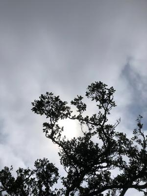

うるがいの話 ある日
最新: 雨に濡れて【うるがいの話 ある日】とは 一日だけのプログです
『うるがいの話』の最新一日だけのプログで、通信料が少なく経済的だ。カニの画像をクリックすると全ての日付が載る『うるがいの話』サイトを表示します
|
|
【うるがいの話】 うるがい(ｳﾙｶﾞｲ urugai)とは、『もずくがに』の名前でとても大きくなります。 |
|---|---|
|
|
【カミマヤーの話】 猫のことを方言でマヤーといいます。カミマヤー（kamimayaa）とは、神の猫のことです。 |
|
【たながぁの音楽】 たながぁ（ﾀﾅｶﾞｰtanagaa）とは手長えびのことで、何種類かあり大きいのは車 エビぐらいになります。 |

|
【ぶながぁの話】 ぶながー(bunagaa)とは、赤い髪の毛、赤い身体、そして身長は１ｍ２０ｃｍ ぐらい、川の蟹を食べているの目撃された。場所は沖縄県国頭郡大宜味村のと ある村僕の隣近所に住んでいる爺さんから、聞いた話です。 |
|
|
【ギーマの話】 ギーマ(giima)とは、山原の里山に咲くスズランに似た、 花を付けます。実は食べられます、 気が付くと口の周りが紫になっています。 |
2022年04月29日 (金）雨に濡れて
16:18


夕方５時の前線が近づく前にと、天気予報アプリを参考に、昼２時過ぎから歩
くことにする。と、準備をしているとにわか雨が５分ほど降る、天気アプリに
も雨雲がある。ふむふむ、暫くテレビをみる、そして２時半前に家をでる（雨
雲はアプリには無かったことを確認して）。ところが金城ダムでかなり強めの
にわか雨が降ってきた、コウモリ傘をさすが濡れる。途中、犬を連れて歩く若
い男性とすれ違う、両手、両足に重りをつけていた。この時間帯には、こんな
変な人もいるんだと喜んだ。そういえば、朝ネコに餌をやって帰るため、エレ
ベータに向かうと、同じ階の若い男性が私より先に歩いていた。そして、彼は
エレベータに近づくと下へのボタンを押して（私のために）、本人は階段を使
って降りていった。おー、幽霊かも。今、大雨が降ってきた、想定内だ。
１６時１４分 ビットコインの総資産 ￥１４、８９２↑